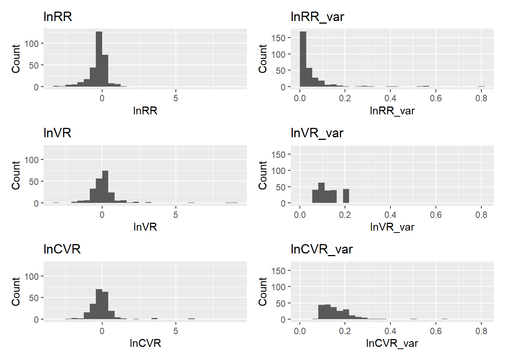

pacman::p_load(
DT,
dtplyr,
here,
knitr,
tidyverse,
patchwork,
metafor,
orchaRd, kableExtra
)Effect size calculation
lnRR
This section estimates the log response ratio (lnRR), which quantifies whether music exposure changes the average level of a behavioral outcome relative to controls.
The lnRR is defined as: \[ \begin{equation} \label{eq:lnRR} \ln RR = \ln\left(\frac{M_T}{M_C}\right) + \frac{1}{2} \left( \frac{SD_T^2}{N_T M_T^2} - \frac{SD_C^2}{N_C M_C^2} \right), \end{equation} \] where \(M_T\) and \(M_C\) denote the sample means, \(SD_T\) and \(SD_C\) the sample standard deviations, and \(N_T\) and \(N_C\) the sample sizes of the music-exposed (treatment) and control groups, respectively.
Negative lnRR values indicate reductions in anxiety- or depression-like behavior under music exposure (after directional harmonization). Specifically, we harmonize outcome direction using the variable Higher_better such that lnRR is multiplied by \(−1\) when higher values represent improved outcomes (e.g., more exploration or less immobility).
lnVR
Here we estimate the log variability ratio (lnVR), which quantifies whether music exposure changes the dispersion (standard deviation) of behavioral outcomes relative to controls.
lnVR is defined as \[ \ln VR = \ln\left(\frac{SD_T}{SD_C}\right) + \frac{1}{2}\left(\frac{1}{N_T-1}-\frac{1}{N_C-1}\right) \] where \(SD\) is the standard deviation and \(N\) is the sample size for treatment (\(T\)) and control (\(C\)) groups.
A positive lnVR indicates higher variability under music exposure (less consistent responses), whereas a negative lnVR indicates lower variability (more consistent responses).
lnCVR
Finally, we estimate the log coefficient of variation ratio (lnCVR). Whereas lnVR compares standard deviations directly, lnCVR compares relative variability, thereby accounting for differences in group means. This is useful when variability is expected to scale with the mean.
lnCVR is defined as
\[ \ln \text{CVR} = \ln \left( \frac{CV_T}{CV_C} \right) + \frac{1}{2} \left( \frac{1}{n_T - 1} - \frac{1}{n_C - 1} \right) - \frac{1}{2} \left( \frac{s_T^2}{n_T M_T^2} - \frac{s_C^2}{n_C M_C^2} \right) \]
where \(M\), \(SD\), amd \(n\) are the sample mean, standard deviation, and sample size for treatment (\(T\)) and control (\(C\)) groups, respectively. \(\text{with} \quad CV = \frac{SD}{M}\)
A positive lnCVR indicates higher relative variability (higher \(CV\)) under music exposure, whereas a negative lnCVR indicates lower relative variability (lower \(CV\)).
Functions and computation
NoteShared workflow details for effect-size functions
All three effect-size functions (calculate_lnRR(), calculate_lnVR(), calculate_lnCVR()) follow the same general preprocessing and design-handling logic to ensure numerical stability and consistent treatment of study designs.
Data-type handling
- Outcomes are categorized via
Data_type. - Proportional outcomes (
Data_type == "percentage") are treated separately for lnRR (variance-stabilizing transformation), and excluded from lnVR and lnCVR because bounded scales induce a mechanical mean–variance relationship that complicates biological interpretation of variability metrics.
Boundary corrections and numerical safeguards
To prevent undefined operations (e.g., log(0) or division by zero), the functions apply small boundary corrections when needed:
means reported as exactly 0 are shifted to a small positive constant (e.g., 0.005),
standard deviations reported as 0 are shifted to small positive constants (e.g., 0.01 / 0.05).
These adjustments are strictly pragmatic and affect only edge cases where effect sizes would otherwise be undefined.
Standard deviation imputation (when required)
When studies report standard errors but not standard deviations, SDs are derived using: \[
\text{SD} = \text{SE} \times \sqrt{N}
\] This imputation is performed during data preprocessing (before effect size computation) so that all effect-size functions operate on complete SD fields.
Independent vs dependent comparisons
Each function accounts for whether treatment and control groups are independent (different animals) or dependent (paired / repeated measures), using Comparison_structure:
Independent: standard two-group estimators are used.
Dependent: correlated-sample estimators are used, and sampling variances include the covariance term implied by within-subject correlation.
When correlation is not reported, we assume a moderate within-subject correlation of \(r = 0.5\), consistent across lnRR, lnVR, and lnCVR, to enable variance estimation for paired designs.
Direction harmonization
Direction harmonization (multiplying by \(−1\) using Higher_better) is applied only to lnRR, because it represents a mean shift with a natural “beneficial vs harmful” polarity after standardizing outcome direction. Variability metrics (lnVR and lnCVR) are interpreted directly (positive = more variable under music; negative = less variable), since dispersion is not inherently “good” or “bad” across outcomes.
db <- readr::read_csv(here("..","data","db251124.csv")) %>%
mutate(
across(c(C_n, Ex_n, C_mean, Ex_mean, C_SE, Ex_SE, C_SD, Ex_SD), as.numeric),
Data_type = tolower(as.character(Data_type)),
Comparison_structure = as.character(Comparison_structure),
Higher_better = as.character(Higher_better)
) %>%
# Impute SD when missing but SE available: SD = SE * sqrt(n)
mutate(
C_SD = ifelse(is.na(C_SD) & !is.na(C_SE) & !is.na(C_n), C_SE * sqrt(C_n), C_SD),
Ex_SD = ifelse(is.na(Ex_SD) & !is.na(Ex_SE) & !is.na(Ex_n), Ex_SE * sqrt(Ex_n), Ex_SD)
) %>%
# Helpful unique cohort identifier (optional)
mutate(Cohort_ID = paste(Study_ID, "Ex-ID", sep = "_"))
NoteHow to handle zeros in means and SDs?
Some studies report means or standard deviations equal to zero (often due to rounding, reporting limits, or zero-inflated measures). Because our effect sizes involve log ratios (e.g., lnRR, lnVR, lnCVR), exact zeros can produce undefined values (e.g., log(0) or division by zero). To avoid dropping these effect sizes, we apply a small continuity correction that is conservative and grounded in the observed data.
This callout contains (i) a continuity-correction helper used during effect-size calculation and (ii) a small audit routine that verifies exactly which rows were modified.
min_pos(): find the smallest non-zero value. This is used to define a “biologically realistic” continuity correction based on observed data rather than an arbitrary constant.apply_continuity_within_group(): continuity correction within outcome strata, separately for each group (control or experimental). This function prevents undefined computations (e.g., log(0) or division by 0)
Step-by-step
- Standardize types
Converts Data_type to lowercase.
Coerces C_mean, Ex_mean, C_SD, and Ex_SD to numeric to ensure reliable comparisons to zero
- Define “local” minima within strata
The dataset is grouped by strata (default: Assay_type × Measurment_variable × Data_type).
Within each stratum, it computes:
min_C_mean_pos: smallest positive control mean
min_Ex_mean_pos: smallest positive experimental mean
These are computed separately for control and experimental groups
- Compute continuity constants (epsilons)
For each stratum:
eps_C_mean = mult × min_C_mean_pos
eps_Ex_mean = mult × min_Ex_mean_pos
With mult = \(0.9\), the replacement value is slightly smaller than the smallest observed non-zero value in that stratum, keeping it within a plausible range.
- Apply corrections
If C_mean == 0, replace with eps_C_mean
If Ex_mean == 0, replace with eps_Ex_mean This ensures means are non-zero where required
Code
min_pos <- function(x) {
x <- x[is.finite(x) & !is.na(x) & x > 0]
if (length(x) == 0) return(NA_real_)
min(x)
}
apply_continuity_within_group <- function(dt,
strata = c("Assay_type", "Measurment_variable", "Data_type"),
mult = 0.9) {
dt <- dt %>%
mutate(
Data_type = tolower(as.character(Data_type)),
across(c(C_mean, Ex_mean, C_SD, Ex_SD), ~as.numeric(as.character(.)))
)
mins <- dt %>%
group_by(across(all_of(strata))) %>%
summarise(
min_C_mean_pos = min_pos(C_mean),
min_Ex_mean_pos = min_pos(Ex_mean),
.groups = "drop"
)
g_C_mean <- min_pos(dt$C_mean)
g_Ex_mean <- min_pos(dt$Ex_mean)
dt %>%
left_join(mins, by = strata) %>%
mutate(
eps_C_mean = mult * coalesce(min_C_mean_pos, g_C_mean),
eps_Ex_mean = mult * coalesce(min_Ex_mean_pos, g_Ex_mean),
# Mean correction (within-group)
C_mean = ifelse(!is.na(C_mean) & C_mean == 0, eps_C_mean, C_mean),
Ex_mean = ifelse(!is.na(Ex_mean) & Ex_mean == 0, eps_Ex_mean, Ex_mean),
# SD rule if SD == 0, set to 0.05
C_SD = ifelse(!is.na(C_SD) & C_SD == 0, 0.05, C_SD),
Ex_SD = ifelse(!is.na(Ex_SD) & Ex_SD == 0, 0.05, Ex_SD)
) %>%
select(-min_C_mean_pos, -min_Ex_mean_pos, -eps_C_mean, -eps_Ex_mean)
}- Audit chunk: verify exactly which rows changed
Code
db_before <- db %>%
mutate(
Data_type = tolower(as.character(Data_type)),
across(c(C_mean, Ex_mean, C_SD, Ex_SD), ~as.numeric(as.character(.)))
) %>%
select(
ES_ID, Study_ID, Cohort_ID, Assay_type, Measurment_variable, Data_type,
C_mean, Ex_mean, C_SD, Ex_SD
)
db_after <- apply_continuity_within_group(
db_before,
strata = c("Assay_type", "Measurment_variable", "Data_type"),
mult = 0.9
) %>%
select(ES_ID, C_mean, Ex_mean, C_SD, Ex_SD) %>%
rename_with(~paste0(.x, "_new"), -ES_ID)
diff <- db_before %>%
left_join(db_after, by = "ES_ID") %>%
mutate(
ch_C_mean = (C_mean != C_mean_new) & !(is.na(C_mean) & is.na(C_mean_new)),
ch_Ex_mean = (Ex_mean != Ex_mean_new) & !(is.na(Ex_mean) & is.na(Ex_mean_new)),
ch_C_SD = (C_SD != C_SD_new) & !(is.na(C_SD) & is.na(C_SD_new)),
ch_Ex_SD = (Ex_SD != Ex_SD_new) & !(is.na(Ex_SD) & is.na(Ex_SD_new)),
any_change = ch_C_mean | ch_Ex_mean | ch_C_SD | ch_Ex_SD
)
# ---- Table 1: Summary counts ----
tab_counts <- diff %>%
summarise(
`Total effect sizes` = n(),
`Any change` = sum(any_change),
`Control mean changed` = sum(ch_C_mean),
`Experimental mean changed` = sum(ch_Ex_mean),
`Control SD changed` = sum(ch_C_SD),
`Experimental SD changed` = sum(ch_Ex_SD)
)
kable(tab_counts, digits = 0, caption = "Audit summary: number of effect sizes modified by the continuity correction.") %>%
kable_styling(full_width = FALSE, bootstrap_options = c("striped", "condensed"))| Total effect sizes | Any change | Control mean changed | Experimental mean changed | Control SD changed | Experimental SD changed |
|---|---|---|---|---|---|
| 298 | 5 | 3 | 0 | 5 | 0 |
Code
# ---- Table 2: Row-level details (only rows that changed) ----
tab_changes <- diff %>%
filter(any_change) %>%
arrange(Study_ID, ES_ID) %>%
transmute(
Study_ID, ES_ID, Cohort_ID, Assay_type, Measurment_variable, Data_type,
`C_mean (old)` = C_mean, `C_mean (new)` = C_mean_new,
`C_SD (old)` = C_SD, `C_SD (new)` = C_SD_new,
`Ex_mean (old)` = Ex_mean, `Ex_mean (new)` = Ex_mean_new,
`Ex_SD (old)` = Ex_SD, `Ex_SD (new)` = Ex_SD_new
)
kable(
tab_changes,
digits = 3,
caption = "Audit details: effect sizes where any value was modified (old vs new)."
) %>%
kable_styling(full_width = TRUE, bootstrap_options = c("striped", "condensed")) %>%
scroll_box(width = "100%", height = "350px")| Study_ID | ES_ID | Cohort_ID | Assay_type | Measurment_variable | Data_type | C_mean (old) | C_mean (new) | C_SD (old) | C_SD (new) | Ex_mean (old) | Ex_mean (new) | Ex_SD (old) | Ex_SD (new) |
|---|---|---|---|---|---|---|---|---|---|---|---|---|---|
| Krishnamurthy_2025_INDIANJTRADITKNOW | es001 | Krishnamurthy_2025_INDIANJTRADITKNOW_Ex-ID | Elevated Plus Maze | Open arm entries | count | 0.000 | 2.710 | 0 | 0.05 | 2.002 | 2.002 | 1.051 | 1.051 |
| Krishnamurthy_2025_INDIANJTRADITKNOW | es003 | Krishnamurthy_2025_INDIANJTRADITKNOW_Ex-ID | Elevated Plus Maze | Time in open arms | time | 0.000 | 2.467 | 0 | 0.05 | 31.378 | 31.378 | 23.443 | 23.443 |
| Krishnamurthy_2025_INDIANJTRADITKNOW | es005 | Krishnamurthy_2025_INDIANJTRADITKNOW_Ex-ID | Elevated Plus Maze | Head dips | count | 0.000 | 5.099 | 0 | 0.05 | 3.256 | 3.256 | 1.305 | 1.305 |
| Ren_2024_ASEAN | es174 | Ren_2024_ASEAN_Ex-ID | Elevated Plus Maze | Distance open arm | distance | 18.237 | 18.237 | 0 | 0.05 | 194.529 | 194.529 | 221.071 | 221.071 |
| Ren_2024_ASEAN | es175 | Ren_2024_ASEAN_Ex-ID | Elevated Plus Maze | Distance open arm | distance | 18.237 | 18.237 | 0 | 0.05 | 489.362 | 489.362 | 480.589 | 480.589 |
Code
calculate_lnRR <- function(dt) {
## 1. Standardize Data_type first (needed for filtering)
dt <- dt %>%
mutate(Data_type = tolower(as.character(Data_type)))
## 2. Apply continuity correction ONLY to non-percentage data
dt_nonperc <- dt %>%
filter(!Data_type %in% c("percentage")) %>%
apply_continuity_within_group(
strata = c("Assay_type", "Measurment_variable", "Data_type"),
mult = 0.9
)
## 3. Handle percentage data separately (bounded safeguards)
dt_perc <- dt %>%
filter(Data_type %in% c("percentage")) %>%
mutate(
# Guard against exact 0 and 100 on 0–100 scales (symmetrically)
C_mean = ifelse(C_mean == 0, 0.5, C_mean),
Ex_mean = ifelse(Ex_mean == 0, 0.5, Ex_mean),
C_mean = ifelse(C_mean == 100, 99.5, C_mean),
Ex_mean = ifelse(Ex_mean == 100, 99.5, Ex_mean),
# Guard against SD = 0 for bounded outcomes (symmetrically)
C_SD = ifelse(C_SD == 0, 0.5, C_SD),
Ex_SD = ifelse(Ex_SD == 0, 0.5, Ex_SD)
)
## 4. Recombine (preserve original ordering if ES_ID exists)
dt <- bind_rows(dt_nonperc, dt_perc) %>%
{ if ("ES_ID" %in% names(.)) arrange(., ES_ID) else . }
## 5. Setup
dt1 <- dt %>%
mutate(
lnRR = NA_real_,
lnRR_var = NA_real_
)
asin_trans <- function(proportion) asin(sqrt(proportion))
## 6. Calculation Loop
for (i in seq_len(nrow(dt1))) {
Ex_n <- dt1$Ex_n[i]
C_n <- dt1$C_n[i]
Ex_mean <- dt1$Ex_mean[i]
C_mean <- dt1$C_mean[i]
Ex_SD <- dt1$Ex_SD[i]
C_SD <- dt1$C_SD[i]
Data_type <- dt1$Data_type[i]
Comparison_structure <- dt1$Comparison_structure[i]
Higher_better <- dt1$Higher_better[i]
# --- A. Continuous Data ---
if (Data_type %in% c("time", "distance", "count", "latency", "index")) {
if (Comparison_structure == "Independent") {
effect <- metafor::escalc(
measure = "ROM",
n1i = Ex_n, n2i = C_n,
m1i = Ex_mean, m2i = C_mean,
sd1i = Ex_SD, sd2i = C_SD,
var.names = c("lnRR", "lnRR_var")
)
} else if (Comparison_structure == "Dependent") {
effect <- metafor::escalc(
measure = "ROMC",
ni = (Ex_n + C_n) / 2,
m1i = Ex_mean, m2i = C_mean,
sd1i = Ex_SD, sd2i = C_SD,
ri = 0.5,
var.names = c("lnRR", "lnRR_var")
)
} else {
next
}
dt1$lnRR[i] <- effect$lnRR
dt1$lnRR_var[i] <- effect$lnRR_var
# Direction harmonization (keep as you had it)
if (Higher_better == "Yes") dt1$lnRR[i] <- -dt1$lnRR[i]
}
# --- B. Proportion Data (Percentage) ---
else if (Data_type %in% c("percentage")) {
# Conditional rescaling (0–100 -> 0–1)
if (max(c(Ex_mean, C_mean), na.rm = TRUE) > 1) {
Ex_mean <- Ex_mean / 100
C_mean <- C_mean / 100
Ex_SD <- Ex_SD / 100
C_SD <- C_SD / 100
}
# Transform SDs
Ex_SD_trans <- sqrt(Ex_SD^2 / (4 * Ex_mean * (1 - Ex_mean)))
C_SD_trans <- sqrt(C_SD^2 / (4 * C_mean * (1 - C_mean)))
# Transform means
Ex_mean_trans <- asin_trans(Ex_mean)
C_mean_trans <- asin_trans(C_mean)
# lnRR
lnRR_pro_calc <- log(Ex_mean_trans / C_mean_trans)
# Sampling variance
V_Ex <- (Ex_SD_trans)^2 * (1 / (Ex_mean_trans^2 * Ex_n))
V_C <- (C_SD_trans)^2 * (1 / (C_mean_trans^2 * C_n))
if (Comparison_structure == "Independent") {
lnRR_var_pro <- V_Ex + V_C
} else if (Comparison_structure == "Dependent") {
lnRR_var_pro <- V_Ex + V_C - 2 * 0.5 * sqrt(V_Ex) * sqrt(V_C)
} else {
next
}
if (Higher_better == "Yes") lnRR_pro_calc <- -lnRR_pro_calc
dt1$lnRR[i] <- lnRR_pro_calc
dt1$lnRR_var[i] <- lnRR_var_pro
}
}
return(dt1)
}db_lnRR <- calculate_lnRR(db)Code
calculate_lnVR <- function(dt) {
## 1. Filter out Proportional Data
dt <- dt %>%
mutate(Data_type = tolower(as.character(Data_type))) %>%
filter(!Data_type %in% c("percentage"))
if (nrow(dt) == 0) {
message("No non-percentage data remaining for lnVR calculation.")
return(dt)
}
## 2. Data Cleaning and Imputation
dt <- apply_continuity_within_group(dt,
strata = c("Assay_type", "Measurment_variable", "Data_type"),
mult = 0.9
)
## 3. Setup
dt$lnVR <- NA_real_
dt$lnVR_var <- NA_real_
## 4. Calculation Loop
for (i in seq_len(nrow(dt))) {
# Extract variables
Ex_n <- dt$Ex_n[i]
C_n <- dt$C_n[i]
Ex_SD <- dt$Ex_SD[i]
C_SD <- dt$C_SD[i]
Data_type <- dt$Data_type[i]
Comparison_structure <- dt$Comparison_structure[i]
# --- Continuous Data ---
if (Data_type %in% c("time", "distance", "count", "latency", "index")) {
# A. INDEPENDENT GROUPS
if (Comparison_structure == "Independent") {
# measure = "VR" (Variability Ratio for independent groups)
# Requires n1i, n2i, sd1i, sd2i
effect <- metafor::escalc(
measure = "VR",
n1i = Ex_n, n2i = C_n,
sd1i = Ex_SD, sd2i = C_SD,
var.names = c("lnVR", "lnVR_var")
)
# B. DEPENDENT GROUPS
} else if (Comparison_structure == "Dependent") {
# measure = "VRC" (Variability Ratio for Correlated/Dependent groups)
# Requires 'ni' (sample size of pairs) and 'ri' (correlation)
# We assume ri = 0.5 (consistent with the lnRR approach)
effect <- metafor::escalc(
measure = "VRC",
ni = (Ex_n + C_n) / 2, # Use average N for the pair
sd1i = Ex_SD, sd2i = C_SD,
ri = 0.5,
var.names = c("lnVR", "lnVR_var")
)
}
# Assign results
dt$lnVR[i] <- effect$lnVR
dt$lnVR_var[i] <- effect$lnVR_var
}
}
return(dt)
}db_lnVR <- calculate_lnVR(db)Code
calculate_lnCVR <- function(dt) {
## 1. Filter out Proportional Data (bounded outcomes)
dt <- dt %>%
mutate(Data_type = tolower(as.character(Data_type))) %>%
filter(!Data_type %in% c("percentage"))
if (nrow(dt) == 0) {
message("No non-percentage data remaining for lnCVR calculation.")
return(dt)
}
## 2. Data Cleaning and Safeguards
dt <- apply_continuity_within_group(
dt,
strata = c("Assay_type", "Measurment_variable", "Data_type"),
mult = 0.9
)
## 3. Setup
dt1 <- dt %>%
mutate(
lnCVR = NA_real_,
lnCVR_var = NA_real_
)
## 4. Calculation Loop
for (i in seq_len(nrow(dt1))) {
# Extract variables
Ex_n <- dt1$Ex_n[i]
C_n <- dt1$C_n[i]
Ex_mean <- dt1$Ex_mean[i]
C_mean <- dt1$C_mean[i]
Ex_SD <- dt1$Ex_SD[i]
C_SD <- dt1$C_SD[i]
Data_type <- dt1$Data_type[i]
Comparison_structure <- dt1$Comparison_structure[i]
# --- Continuous Data ---
if (Data_type %in% c("time", "distance", "count", "latency", "index")) {
# A. INDEPENDENT GROUPS
if (Comparison_structure == "Independent") {
# measure = "CVR" (Coefficient of Variation Ratio; independent groups)
effect <- metafor::escalc(
measure = "CVR",
n1i = Ex_n, n2i = C_n,
m1i = Ex_mean, m2i = C_mean,
sd1i = Ex_SD, sd2i = C_SD,
var.names = c("lnCVR", "lnCVR_var")
)
# B. DEPENDENT GROUPS
} else if (Comparison_structure == "Dependent") {
# measure = "CVRC" (CV ratio for correlated/paired groups)
# assumes ri = 0.5 for within-subject correlation
effect <- metafor::escalc(
measure = "CVRC",
ni = (Ex_n + C_n) / 2, # average N for the pair
m1i = Ex_mean, m2i = C_mean,
sd1i = Ex_SD, sd2i = C_SD,
ri = 0.5,
var.names = c("lnCVR", "lnCVR_var")
)
} else {
next
}
# Assign results
dt1$lnCVR[i] <- effect$lnCVR
dt1$lnCVR_var[i] <- effect$lnCVR_var
}
}
return(dt1)
}db_lnCVR <- calculate_lnCVR(db)Save the analysis-ready effect size table
db_es <- db_lnRR %>%
left_join(
db_lnVR %>% select(ES_ID, lnVR, lnVR_var),
by = "ES_ID"
) %>%
left_join(
db_lnCVR %>% select(ES_ID, lnCVR, lnCVR_var),
by = "ES_ID"
)readr::write_csv(db_es, here("..","data","db_effect_sizes.csv"))We load the dataset for visuallization
db_es <- readr::read_csv(here("..","data","db_effect_sizes.csv")) %>%
mutate(Data_type = tolower(as.character(Data_type)))Code
# --- 1) Prepare vectors (drop NAs) ---
x_eff <- db_es %>% select(lnRR, lnVR, lnCVR) %>% unlist(use.names = FALSE)
x_eff <- x_eff[is.finite(x_eff)]
x_var <- db_es %>% select(lnRR_var, lnVR_var, lnCVR_var) %>% unlist(use.names = FALSE)
x_var <- x_var[is.finite(x_var)]
# --- 2) Shared x-limits + binwidths (30 bins across the pooled range) ---
xlim_eff <- range(x_eff)
xlim_var <- range(x_var)
bw_eff <- diff(xlim_eff) / 30
bw_var <- diff(xlim_var) / 30
# --- 3) Shared y-limits (max bin count across variables, using same breaks) ---
breaks_eff <- seq(xlim_eff[1], xlim_eff[2], by = bw_eff)
breaks_var <- seq(xlim_var[1], xlim_var[2], by = bw_var)
ymax_eff <- max(
hist(db_es$lnRR, breaks = breaks_eff, plot = FALSE)$counts,
hist(db_es$lnVR, breaks = breaks_eff, plot = FALSE)$counts,
hist(db_es$lnCVR, breaks = breaks_eff, plot = FALSE)$counts,
na.rm = TRUE
)
ymax_var <- max(
hist(db_es$lnRR_var, breaks = breaks_var, plot = FALSE)$counts,
hist(db_es$lnVR_var, breaks = breaks_var, plot = FALSE)$counts,
hist(db_es$lnCVR_var, breaks = breaks_var, plot = FALSE)$counts,
na.rm = TRUE
)
# --- 4) Plot helper (standardized x/y) ---
plot_hist <- function(data, var, title, bw, xlim, ymax) {
ggplot(data, aes(x = {{ var }})) +
geom_histogram(binwidth = bw, boundary = xlim[1], closed = "left") +
coord_cartesian(xlim = xlim, ylim = c(0, ymax)) +
labs(title = title, x = title, y = "Count")
}
# --- 5) Effect-size histograms (shared axes) ---
p_lnRR <- plot_hist(db_es, lnRR, "lnRR", bw_eff, xlim_eff, ymax_eff)
p_lnVR <- plot_hist(db_es, lnVR, "lnVR", bw_eff, xlim_eff, ymax_eff)
p_lnCVR <- plot_hist(db_es, lnCVR, "lnCVR", bw_eff, xlim_eff, ymax_eff)
# --- 6) Sampling-variance histograms (shared axes) ---
p_lnRR_v <- plot_hist(db_es, lnRR_var, "lnRR_var", bw_var, xlim_var, ymax_var)
p_lnVR_v <- plot_hist(db_es, lnVR_var, "lnVR_var", bw_var, xlim_var, ymax_var)
p_lnCVR_v <- plot_hist(db_es, lnCVR_var, "lnCVR_var", bw_var, xlim_var, ymax_var)
# --- 7) Arrange (3 rows × 2 columns) ---
(p_lnRR | p_lnRR_v) /
(p_lnVR | p_lnVR_v) /
(p_lnCVR | p_lnCVR_v)